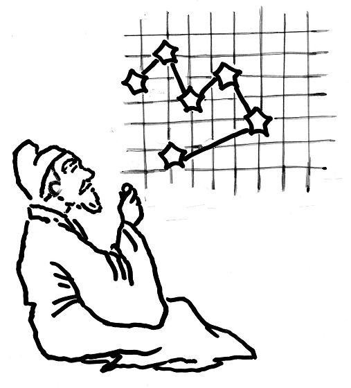

五子文化与知识(一)五子棋艺 追根探源
#1 五子文化与知识(一)五子棋艺 追根探源 作者：刺青 发表时间：2010-2-27 17:06:27
中国棋院在线讯 五子棋起源于中国，是我国古老的黑白传统棋种之一，广受我国大众喜爱，是中华民族宝贵文化遗产的一部分。中国棋院在线将以连载形式向广大棋友们介绍《五子棋知识》一书，敬请关注！今天将为大家讲述五子棋的简介及起源。
一、五子棋艺 追根探源
(一)简介
具有世界最悠久历史的伟大祖国——中国，是世界四大文明古国之一，在漫长的历史长河中，创造了灿烂的中国文化。中国特有的民族文化，是中华民族从古至今，屹立于世界民族之林，得以延续发展的精神支柱。其中，棋文化是构成中华民族文化的一部分，现今世界上流行最广泛的棋种大多起源于中国。
当今，大有风靡全球之势的五子棋，就是起源于中国的黑白传统棋种之一。五子棋的发明，体现了中华民族对智慧的追求，是中华民族逻辑思维和形象思维双翼齐飞的智慧结晶。五子棋规则简明，对弈场地、用具简单易行。棋道变化无穷，与几千年的中国古代文明水乳交融。现代竞技连珠五子棋使凝集着古代精华的棋理进一步得到传承，成为东西方文化交互在一起的璀璨明星。国粹五子棋堪称我国古老文化的瑰宝，是祖国宝贵文化遗产的一部分，五子棋的发明是中国为人类文明做出的贡献。
五子棋将科学、艺术、竞技、娱乐与教育五者融为一体。对弈五子棋，对自己可以启智静心，与别人可以进行和谐交流。不分智商高低，老少皆宜。现今已成为深受中国乃至世界广大民众所喜爱的一项智力体育项目，已逐渐发展成为国际性文化体育交流不可缺少的内容之一。
五子棋的下法是：对弈双方各执黑或白一色棋子，在棋盘上面，黑方先，白方后，交替落子于交叉点上。棋子落下后不能移动，没有吃子。黑方或白方哪一方先在棋盘的横、竖、斜方向的同一条直线上，由同色子连成五连为胜。
图1：古代中国人下五子棋
五子棋的称谓多种多样，如：“连五子”、“五子连”、“五格”、“串珠”、“五目”、“五目碰”等。现代日本称五子棋为“连珠”(renju)，由于把民间游戏的五子棋改良成竞技的努力主要来自日本，所以用“连珠”称谓五子棋流行于世界。国际上的一些组织或赛事，也多以连珠命名。如世界上最大的五子棋民间组织称为“国际连珠联盟(RIF)”，世界上五子棋最大最正规的民间赛事称“世界连珠锦标赛”等。“连珠”这个词似乎比“五子棋”更有诗意，但五子棋界很多人，包括一些日本人在内均认为“连珠”的叫法似乎不如叫“五子棋”准确。说起连珠，很多人会不知道它，但提起五子棋，就连孩子也知道是什么了。
不同国家和地区还各有自己对五子棋的不同爱称，韩国人把五子棋称为“情侣棋”，意指五子棋能增加情感的交流；欧洲人称五子棋为“绅士棋”，喻棋手下五子棋的君子风度胜似绅士；美洲人取其贸易价值，可以边谈生意边下五子棋，称五子棋为“商业棋”。
(二)起源
五子棋的起源可说是个谜。虽然我们可以相信，随着人们对棋文化的深入研究以及考古工作的进展，五子棋的起源会逐步透过云雾，更清晰地展现在我们面前。但五子棋发明的年代距今久远，受文字等历史条件的限制，确切的说出五子棋发明的年代、人物、起因和事件等大概是不可能的。
五子棋起源于古代中国，这是世界公认的。据说，五子棋最初流行于中国少数民族地区。
五子棋起源的年代，相传是在尧舜时期，距今已有四千多年了。汉朝的班固在《弈旨》一文中阐述：“局必方正，象地则也。道必正直，神明德也。棋有白黑，阴阳分也。骈罗列布，效天文也。四象既陈，行之在人，盖王政也。”他指出了黑白棋种棋局中，棋盘线道，棋子颜色和行棋时的形象，以及行棋胜负不是靠侥幸，而是要靠人的技巧。班固阐述的虽然是围棋棋理，但是我们可从侧面看出，黑白棋种的发明是要有一定的数学、天文学、哲学、军事学的发展为基础的。五子棋的行棋离不开数学的计算。五子棋的棋具本身也渗透着天文学和哲学的深奥。中国人自古以来，喜欢用宇宙自然法则去解释日常事物，五子棋棋盘的横纵线及星位的标示，代表人们想象中宇宙天体的星辰分布之序。棋子为黑白两色，代表着阴阳两性。尧舜时期是原始社会末期，是中国社会更新换代时期，当时的数学、天文学、哲学、军事学都有了很大的发展。就尧舜时期的社会生活状况，物质条件和科学发展程度，综合起来分析，发明五子棋的可能性是很大的。

图2：宇宙天体与棋盘
五子棋到底是哪个人发明的，各种说法均不可信。传说中说的某个人发明的五子棋，那只不过是古代人荣古慕胜的心理反映。五子棋的发明应该是古代人们长期实践活动后，集聚众人智慧的结晶。
五子棋的发明与围棋有千丝万缕的联系，